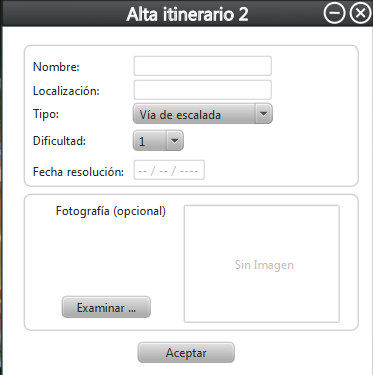

Alta de itinerario
Esta es la pantalla de alta de itinerario.

Para dar de alta un itinerario se deben de rellenar todos los campos que se pueden ver en la imagen.
El -Nombre- y la -Localizacion- simplemente es rellenar los campos.
El -Tipo- y la -Dificultad- se elegiran seleccionando el desplegable y marcando la opcion deseada.
La -Fecha resolucion- hace referencia a la fecha exacta en la que se realizo dicho itinerario.
En el alta de itinerario se puede adjuntar una imagen del mismo. Esto se hara seleccionando el boton -Examinar- y eligiendo la imagen deseada.
Por ultimo, seleccionando el boton -Aceptar- se dara de alta el itinerario.